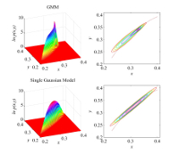

|
|
Research Interest
• Photoreceptor Noise and Modeling • Color Camera Design • Multispectral and Colorimetric Capturing and Reproduction
|
Research |
|
Distribution of Photon Energy among a Population of Interleaved PhotoreceptorsPhoton absorptions in a photoreceptor cell of a particular class fluctuate with Poisson statistics. Then, two receptors of the same type exposed to the same light may absorb different numbers of photons of different frequencies, and thus different levels of energy. In this research, we find the histogram of individual cells absorption when an array of identical photoreceptors is exposed repeatedly to uniform multi-wavelength light energy.[FVM Poster] [More] |
|
Characterization of Spatiotemporal Fluctuations of Digital Counts in a CMOS Sensor
When a sub-array of a CMOS sensor is exposed to a uniformly illuminated color patch,
the actual amount of absorbed photon energy in each pixel varies with repeated exposure.
This type of photon fluctuation introduces a spatial and a temporal variation in the digital
outputs of individual pixels. In this work, we characterize such variations
and discuss the relationship between the spatial and temporal fluctuations.
|
||||||||||||||||||||||||||||||||
Color Detection and Discrimination
Given that identical cells of the same class exposed to uniform light absorb different levels of energy,
a trichromatic stimulation produces a distribution of responses within the cone excitation space.
Such scattering implies an uncertainty due to spatial variation in individual cells absorption.
In this work, I investigate the influence that this uncertainty may have up on the human color
discrimination performance.
|
|||||||||||||||||||||||||||||||||||||||
Simultaneous Color Contrast
Chromatic induction is a visual phenomenon in which the color appearance of an object is
influenced by the presence of neighboring colors. This phenomenon is called also
simultaneous color contrast to emphasize the notion that the induced color on an infield target
is simultaneously present with the surrounding color. In this work, I examine the interaction
between the luminance and chromatic channels as a potential determinant of the induction strength
in a simple center-surround stimulus.
|
|||||||||||||||||||||||||||||||||||||||
Color Characterization of Outdoor IlluminationThe global radiation spectrum is affected by a wide range of atmospheric components, including solar geometry, aerosols, gases, cloud cover and albedo which all modify the spectral radiation as it passes through the atmosphere and reaches ground level. With an aim of understanding the influence of atmospheric components and phases of daylight on colorimetric specifications of downward radiation, here we incorporate a wide range of plausible atmospheric parameters into a radiative transfer code and generate a large set of illuminations which may commonly occur in nature. In this research, we investigate colorimetric extension of plausible daylight, sunlight and skylight illuminations and analyze atmospheric components which cause substantial variation in the color of natural illumination.[JOSA A] [DATA] |
|||||||||||||||||||||||||||||||||||||||
|  |
Extension of the Bayesian Inverse Approach to the Gaussian Mixture ModelIn this work, the Bayesian approach to the inverse problem of spectral recovery has been extended to mixtures of Gaussian distributions. We analyzed the performance of the model in spectral reconstruction of outdoor illuminations. We showed that the proposed method outperforms both the linear model and the Wiener inverse method for spectral approximation.[JOSA A] |
||||||||||||||||||||||||||||||||||||||
Spectral Approximation and Color CorrectionThe goal of color correction methods is to relate a response in a device-dependent space (e.g. RGB in a camera sensor) to a color vector in a device independent space (e.g. CIEXYZ, CIELAB, ...). The spectral reflectance of an object provides the link between these two spaces. Spectral reconstruction method has been developed to recover the intrinsic spectral properties of an object from responses of an imaging system (human eye or imaging sensor).[JOSA A] [JOSA A] [IEEE Trans. on Image Processing] |
|||||||||||||||||||||||||||||||||||||||
Publications
|
|||||||||||||||||||||||||||||||||||||||
Code & Database |
|||||||||||||||||||||||||||||||||||||||
Background |
|||||||||||||||||||||||||||||||||||||||
|
|
|||||||||||||||||||||||||||||||||||||||